YouSpeed / Traffic-sign catalogue / Germany YouSpeed · Traffic-sign catalogue
Traffic signs in Germany Traffic signs, national sign codes and the YouSpeed app’s spoken names in four languages. Choose a country and search for a sign.
Reference catalogue. Recognition availability depends on the country pack.
Search signs 111 Catalogue entries
Danger DE:101
English Caution, Danger Français Attention, Danger Deutsch Achtung, Gefahrstelle Nederlands Let op, Gevaar Image source and licence nach den historischen Vorgaben digital umgesetzt durch Mediatus · File:Zeichen 101 - Gefahrstelle, StVO 1970.svg · Public domain
Unmodified original SVG; Original SVG rasterized locally to fit 256 × 256 pixels, aspect ratio preserved, metadata stripped.
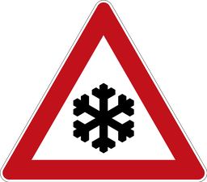
Snow or ice DE:101-51
English Caution, Snow or ice Français Attention, Neige ou verglas Deutsch Achtung, Schnee- oder Eisglätte Nederlands Let op, Sneeuw of ijzel Image source and licence Nach den amtlichen Vorgaben digital umgesetzt durch: Mediatus · File:Zeichen 101-51 - Schnee- oder Eisglätte, StVO 2017.svg · Public domain
Unmodified original SVG; Original SVG rasterized locally to fit 256 × 256 pixels, aspect ratio preserved, metadata stripped.
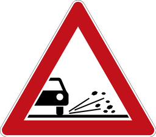
Loose gravel DE:101-52
English Caution, Loose gravel Français Attention, Gravillons Deutsch Achtung, Splitt oder Schotter Nederlands Let op, Losliggende stenen Image source and licence Nach den amtlichen Vorgaben digital umgesetzt durch: Mediatus · File:Zeichen 101-52 - Splitt, Schotter, StVO 2017.svg · Public domain
Unmodified original SVG; Original SVG rasterized locally to fit 256 × 256 pixels, aspect ratio preserved, metadata stripped.
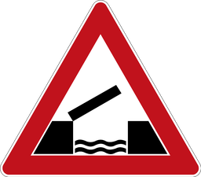
Opening bridge DE:101-55
English Caution, Opening bridge Français Attention, Pont mobile Deutsch Achtung, Bewegliche Brücke Nederlands Let op, Beweegbare brug Image source and licence Nach den amtlichen Vorgaben digital umgesetzt durch: Mediatus · File:Zeichen 101-55 - Bewegliche Brücke, StVO 2017.svg · Public domain
Unmodified original SVG; Original SVG rasterized locally to fit 256 × 256 pixels, aspect ratio preserved, metadata stripped.
Junction DE:102
English Caution, Junction with priority from the right Français Attention, Intersection avec priorité à droite Deutsch Achtung, Kreuzung mit Vorfahrt von rechts Nederlands Let op, Kruispunt met voorrang van rechts Image source and licence Interpretiert und digital gezeichnet durch MarianSigler and Mediatus · File:Zeichen 102 - Kreuzung oder Einmündung mit Vorfahrt von rechts, StVO 1970.svg · Public domain
Unmodified original SVG; Original SVG rasterized locally to fit 256 × 256 pixels, aspect ratio preserved, metadata stripped.
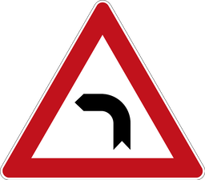
Left bend DE:103-10
English Caution, Left bend Français Attention, Virage à gauche Deutsch Achtung, Kurve links Nederlands Let op, Bocht naar links Image source and licence first version: Andreas 06; nach den authentischen Vorgaben 2017 komplett neu gezeichnet durch Mediatus · File:Zeichen 103-10 - Kurve (links), StVO 1992.svg · Public domain
Unmodified original SVG; Original SVG rasterized locally to fit 256 × 256 pixels, aspect ratio preserved, metadata stripped.
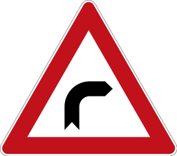
Right bend DE:103-20
English Caution, Right bend Français Attention, Virage à droite Deutsch Achtung, Kurve rechts Nederlands Let op, Bocht naar rechts Image source and licence first version: Andreas 06; nach den authentischen Vorgaben 2017 komplett neu gezeichnet durch Mediatus · File:Zeichen 103-20 - Kurve (rechts), StVO 1992.svg · Public domain
Unmodified original SVG; Original SVG rasterized locally to fit 256 × 256 pixels, aspect ratio preserved, metadata stripped.
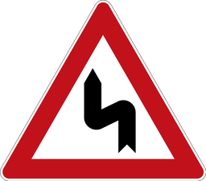
Double bend, first left DE:105-10
English Caution, Double bend, first left Français Attention, Succession de virages, premier à gauche Deutsch Achtung, Doppelkurve, zuerst links Nederlands Let op, S-bocht, eerst links Image source and licence erstes Hochladen einer Datei durch Andreas 06; nach den historischen Vorgaben korrekt interpretiert und digital umgesetzt durch Mediatus · File:Zeichen 105-10 - Doppelkurve (zunächst links), StVO 1992.svg · Public domain
Unmodified original SVG; Original SVG rasterized locally to fit 256 × 256 pixels, aspect ratio preserved, metadata stripped.
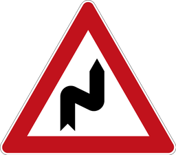
Double bend, first right DE:105-20
English Caution, Double bend, first right Français Attention, Succession de virages, premier à droite Deutsch Achtung, Doppelkurve, zuerst rechts Nederlands Let op, S-bocht, eerst rechts Image source and licence erstes Hochladen einer Datei durch Andreas 06; nach den historischen Vorgaben korrekt interpretiert und digital umgesetzt durch Mediatus · File:Zeichen 105-20 - Doppelkurve (zunächst rechts), StVO 1992.svg · Public domain
Unmodified original SVG; Original SVG rasterized locally to fit 256 × 256 pixels, aspect ratio preserved, metadata stripped.
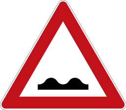
Uneven road DE:112
English Caution, Uneven road Français Attention, Chaussée déformée Deutsch Achtung, Unebene Fahrbahn Nederlands Let op, Slecht wegdek Image source and licence MarianSigler, Fry1989; komplett neue Datei am 1. Mai 2017 nach den historischen Vorgaben digital umgesetzt durch Mediatus · File:Zeichen 112 – Unebene Fahrbahn, StVO 1970.svg · Public domain
Unmodified original SVG; Original SVG rasterized locally to fit 256 × 256 pixels, aspect ratio preserved, metadata stripped.
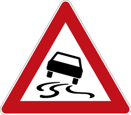
Slippery road DE:114
English Caution, Slippery road Français Attention, Chaussée glissante Deutsch Achtung, Schleuder- oder Rutschgefahr Nederlands Let op, Slipgevaar Image source and licence nach den Vorgaben digital umgesetzt durch Mediatus · File:Zeichen 114 - Schleuder- oder Rutschgefahr, StVO 2013.svg · Public domain
Unmodified original SVG; Original SVG rasterized locally to fit 256 × 256 pixels, aspect ratio preserved, metadata stripped.
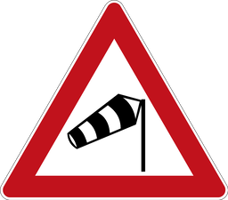
Crosswinds DE:117
English Caution, Crosswinds Français Attention, Vent latéral Deutsch Achtung, Seitenwind Nederlands Let op, Zijwind Image source and licence Andreas06, Bigbossfarin and Mediatus · File:Zeichen 117-10 - Seitenwind von rechts, StVO 1992.svg · Public domain
Unmodified original SVG; Original SVG rasterized locally to fit 256 × 256 pixels, aspect ratio preserved, metadata stripped.
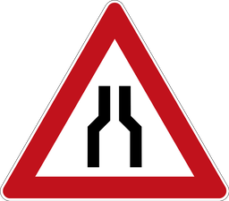
Road narrows DE:120
English Caution, Road narrows Français Attention, Chaussée rétrécie Deutsch Achtung, Verengte Fahrbahn Nederlands Let op, Wegversmalling Image source and licence nach den historischen Vorgaben digital umgesetzt durch Mediatus · File:Zeichen 120 - Verengte Fahrbahn, StVO 1970.svg · Public domain
Unmodified original SVG; Original SVG rasterized locally to fit 256 × 256 pixels, aspect ratio preserved, metadata stripped.
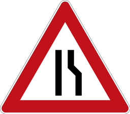
Road narrows on right DE:121-10
English Caution, Road narrows on right Français Attention, Chaussée rétrécie à droite Deutsch Achtung, Verengung rechts Nederlands Let op, Wegversmalling rechts Image source and licence Erste, nur grob korrekte Datei: Andreas 06. Nach den amtlichen Vorgaben 2016 digital umgesetzt durch: Mediatus · File:Zeichen 121-10 - einseitig (rechts) verengte Fahrbahn, StVO 1992.svg · Public domain
Unmodified original SVG; Original SVG rasterized locally to fit 256 × 256 pixels, aspect ratio preserved, metadata stripped.
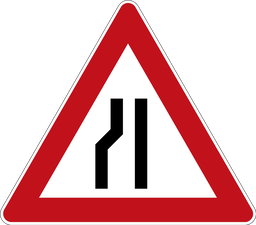
Road narrows on left DE:121-20
English Caution, Road narrows on left Français Attention, Chaussée rétrécie à gauche Deutsch Achtung, Verengung links Nederlands Let op, Wegversmalling links Image source and licence Erste, nur grob korrekte Datei: Andreas 06. Nach den amtlichen Vorgaben 2017 digital umgesetzt durch: Mediatus · File:Zeichen 121-20 - einseitig (links) verengte Fahrbahn, StVO 1992.svg · Public domain
Unmodified original SVG; Original SVG rasterized locally to fit 256 × 256 pixels, aspect ratio preserved, metadata stripped.
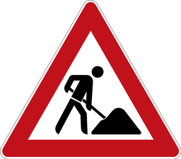
Road works DE:123
English Caution, Road works Français Attention, Travaux Deutsch Achtung, Baustelle Nederlands Let op, Wegwerkzaamheden Image source and licence Nach den amtlichen Vorgaben 2017 digital umgesetzt durch: Mediatus · File:Zeichen 123 - Arbeitsstelle, StVO 2013.svg · Public domain
Unmodified original SVG; Original SVG rasterized locally to fit 256 × 256 pixels, aspect ratio preserved, metadata stripped.
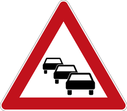
Traffic queues DE:124
English Caution, Traffic queues Français Attention, Bouchons Deutsch Achtung, Stau Nederlands Let op, Filevorming Image source and licence vectorized by · File:Zeichen 124 - Stau, StVO 1992.svg · Public domain
Unmodified original SVG; Original SVG rasterized locally to fit 256 × 256 pixels, aspect ratio preserved, metadata stripped.
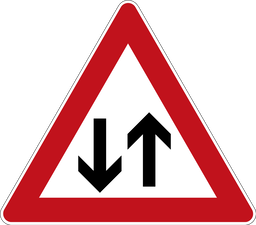
Two-way traffic DE:125
English Caution, Two-way traffic Français Attention, Circulation dans les deux sens Deutsch Achtung, Gegenverkehr Nederlands Let op, Tweerichtingsverkeer Image source and licence MarianSigler {bla}, Mediatus · File:Zeichen 125 - Gegenverkehr, StVO 1992.svg · Public domain
Unmodified original SVG; Original SVG rasterized locally to fit 256 × 256 pixels, aspect ratio preserved, metadata stripped.
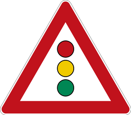
Traffic lights ahead DE:131
English Caution, Traffic lights ahead Français Attention, Feux de circulation annoncés Deutsch Achtung, Lichtzeichenanlage voraus Nederlands Let op, Verkeerslichten vooruit Image source and licence first upload: Cfaerber; new upload with original datas by Mediatus · File:Zeichen 131 - Lichtzeichenanlage, StVO 1970.svg · Public domain
Unmodified original SVG; Original SVG rasterized locally to fit 256 × 256 pixels, aspect ratio preserved, metadata stripped.
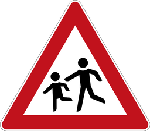
Children DE:136
English Caution, Children Français Attention, Enfants Deutsch Achtung, Kinder Nederlands Let op, Kinderen Image source and licence Bundesministerium für Verkehr, Bau- und Wohnungswesen; digital revision by Mediatus · File:Zeichen 136-10 - Kinder, Aufstellung rechts, StVO 1992.svg · Public domain
Unmodified original SVG; Original SVG rasterized locally to fit 256 × 256 pixels, aspect ratio preserved, metadata stripped.
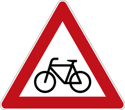
Cyclists DE:138
English Caution, Cyclists Français Attention, Cyclistes Deutsch Achtung, Radverkehr Nederlands Let op, Fietsers Image source and licence MarianSigler; digital revision by Mediatus · File:Zeichen 138-10 - Radverkehr, StVO 2013.svg · Public domain
Unmodified original SVG; Original SVG rasterized locally to fit 256 × 256 pixels, aspect ratio preserved, metadata stripped.
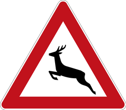
Wild animals DE:142
English Caution, Wild animals Français Attention, Passage d’animaux sauvages Deutsch Achtung, Wildwechsel Nederlands Let op, Overstekend wild Image source and licence Bundesanstalt für Straßenwesen (Germany); digital revision by Mediatus · File:Zeichen 142-10 - Wildwechsel, Aufstellung rechts, StVO 1992.svg · Public domain
Unmodified original SVG; Original SVG rasterized locally to fit 256 × 256 pixels, aspect ratio preserved, metadata stripped.
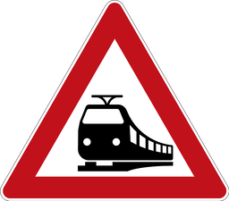
Level crossing DE:151
English Caution, Level crossing Français Attention, Passage à niveau Deutsch Achtung, Bahnübergang Nederlands Let op, Overweg Image source and licence Nach den amtlichen Vorgaben digital umgesetzt durch: Mediatus · File:Zeichen 151 - Bahnübergang, StVO 2013.svg · Public domain
Unmodified original SVG; Original SVG rasterized locally to fit 256 × 256 pixels, aspect ratio preserved, metadata stripped.
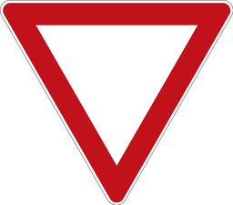
Give way DE:205
English Give way Français Cédez le passage Deutsch Vorfahrt gewähren Nederlands Voorrang verlenen Image source and licence first sign: Andreas 06; new datas: Mediatus · File:Zeichen 205 - Vorfahrt gewähren! StVO 1970.svg · Public domain
Unmodified original SVG; Original SVG rasterized locally to fit 256 × 256 pixels, aspect ratio preserved, metadata stripped.
Stop. Give way DE:206
English Stop. Give way Français Stop. Cédez le passage Deutsch Halt. Vorfahrt gewähren Nederlands Stop. Voorrang verlenen Image source and licence nach den historischen Vorgaben digital gezeichnet und interpretiert von Mediatus. · File:Zeichen 206 - Halt! Vorfahrt gewähren! StVO 2017.svg · Public domain
Unmodified original SVG; Commons PNG rendition resized to fit 256 × 256 pixels with aspect ratio preserved and metadata stripped. Commons renderer used because ImageMagick SVG renderer loses sign lettering or ring.
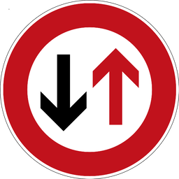
Give priority to oncoming traffic DE:208
English Give priority to oncoming traffic Français Priorité à la circulation en sens inverse Deutsch Vorrang des Gegenverkehrs Nederlands Tegenliggers hebben voorrang Image source and licence Andreas 06 (ursprüngliche Datei); komplett neu erstellt durch Mediatus · File:Zeichen 208 - Dem Gegenverkehr Vorrang gewähren! 600x600, StVO 1992.svg · Public domain
Unmodified original SVG; Original SVG rasterized locally to fit 256 × 256 pixels, aspect ratio preserved, metadata stripped.
Turn right ahead DE:209
English Turn right ahead Français Tourner à droite Deutsch Rechts abbiegen Nederlands Rechtsaf Image source and licence Nach den amtlichen Vorgaben digital umgesetzt durch: Mediatus · File:Zeichen 209 - Vorgeschriebene Fahrtrichtung, rechts, StVO 2017.svg · Public domain
Unmodified original SVG; Original SVG rasterized locally to fit 256 × 256 pixels, aspect ratio preserved, metadata stripped.
Turn left ahead DE:209-10
English Turn left ahead Français Tourner à gauche Deutsch Links abbiegen Nederlands Linksaf Image source and licence Nach den amtlichen Vorgaben digital umgesetzt durch: Mediatus · File:Zeichen 209-10 - Vorgeschriebene Fahrtrichtung, links, StVO 2017.svg · Public domain
Unmodified original SVG; Original SVG rasterized locally to fit 256 × 256 pixels, aspect ratio preserved, metadata stripped.
Ahead only DE:209-30
English Ahead only Français Tout droit Deutsch Geradeaus Nederlands Rechtdoor Image source and licence Nach den amtlichen Vorgaben digital umgesetzt durch: Mediatus · File:Zeichen 209-30 - Vorgeschriebene Fahrtrichtung, Geradeaus, StVO 2017.svg · Public domain
Unmodified original SVG; Original SVG rasterized locally to fit 256 × 256 pixels, aspect ratio preserved, metadata stripped.
Turn right here DE:211
English Turn right here Français Tourner ici à droite Deutsch Hier rechts Nederlands Hier rechtsaf Image source and licence Nach den amtlichen Vorgaben digital umgesetzt durch: Mediatus · File:Zeichen 211 - Vorgeschriebene Fahrtrichtung, hier rechts, StVO 2017.svg · Public domain
Unmodified original SVG; Original SVG rasterized locally to fit 256 × 256 pixels, aspect ratio preserved, metadata stripped.
Ahead or right DE:214
English Ahead or right Français Tout droit ou à droite Deutsch Geradeaus oder rechts Nederlands Rechtdoor of rechtsaf Image source and licence Nach den amtlichen Vorgaben digital umgesetzt durch: Mediatus · File:Zeichen 214 - Vorgeschriebene Fahrtrichtung, Geradeaus oder rechts, StVO 2017.svg · Public domain
Unmodified original SVG; Original SVG rasterized locally to fit 256 × 256 pixels, aspect ratio preserved, metadata stripped.
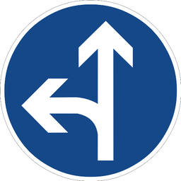
Ahead or left DE:214-10
English Ahead or left Français Tout droit ou à gauche Deutsch Geradeaus oder links Nederlands Rechtdoor of linksaf Image source and licence Nach den amtlichen Vorgaben digital umgesetzt durch: Mediatus · File:Zeichen 214-10 - Vorgeschriebene Fahrtrichtung, Geradeaus oder links, StVO 2017.svg · Public domain
Unmodified original SVG; Original SVG rasterized locally to fit 256 × 256 pixels, aspect ratio preserved, metadata stripped.
Turn left or right DE:214-30
English Turn left or right Français À gauche ou à droite Deutsch Links oder rechts Nederlands Linksaf of rechtsaf Image source and licence Nach den amtlichen Vorgaben digital umgesetzt durch: Mediatus · File:Zeichen 214-30 - Vorgeschriebene Fahrtrichtung, Rechts oder links, StVO 2017.svg · Public domain
Unmodified original SVG; Original SVG rasterized locally to fit 256 × 256 pixels, aspect ratio preserved, metadata stripped.
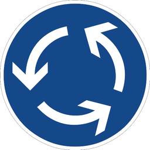
Roundabout DE:215
English Roundabout Français Carrefour giratoire Deutsch Kreisverkehr Nederlands Rotonde Image source and licence Erstes Hochladen: Andreas06. Neue erstellt nach den amtlichen Vorgaben durch: Mediatus · File:Zeichen 215 - Kreisverkehr, StVO 2000.svg · Public domain
Unmodified original SVG; Original SVG rasterized locally to fit 256 × 256 pixels, aspect ratio preserved, metadata stripped.
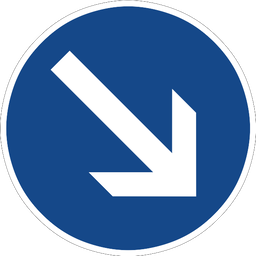
Pass on the right DE:222
English Pass on the right Français Passage par la droite Deutsch Rechts vorbeifahren Nederlands Rechts passeren Image source and licence Nach den amtlichen Vorgaben digital umgesetzt durch: Mediatus · File:Zeichen 222 - Vorgeschriebene Vorbeifahrt, Rechts vorbei, StVO 2017.svg · Public domain
Unmodified original SVG; Original SVG rasterized locally to fit 256 × 256 pixels, aspect ratio preserved, metadata stripped.
Pass on the left DE:222-10
English Pass on the left Français Passage par la gauche Deutsch Links vorbeifahren Nederlands Links passeren Image source and licence Vectorization: Mediatus (Nach den amtlichen Vorgaben digital umgesetzt) · File:Zeichen 222-10 - Vorgeschriebene Vorbeifahrt, Links vorbei, StVO 2017.svg · Public domain
Unmodified original SVG; Original SVG rasterized locally to fit 256 × 256 pixels, aspect ratio preserved, metadata stripped.
Cycle path DE:237
English Cycle path Français Piste cyclable Deutsch Radweg Nederlands Fietspad Image source and licence MarianSigler {bla}, Mediatus · File:Zeichen 237 - Sonderweg Radfahrer, StVO 1992.svg · Public domain
Unmodified original SVG; Original SVG rasterized locally to fit 256 × 256 pixels, aspect ratio preserved, metadata stripped.
Bridleway DE:238
English Bridleway Français Chemin pour cavaliers Deutsch Reitweg Nederlands Ruiterpad Image source and licence first datas: Andreas 06. Nach den amtlichen Vorgaben 2017 komplett neu digital umgesetzt durch: Mediatus · File:Zeichen 238 - Sonderweg Reiter, StVO 1992.svg · Public domain
Unmodified original SVG; Original SVG rasterized locally to fit 256 × 256 pixels, aspect ratio preserved, metadata stripped.
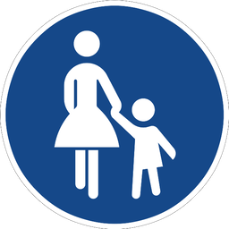
Footpath DE:239
English Footpath Français Chemin pour piétons Deutsch Gehweg Nederlands Voetpad Image source and licence first datas: Andreas 06. Nach den amtlichen Vorgaben 2017 komplett neu digital umgesetzt durch: Mediatus · File:Zeichen 239 - Sonderweg Fußgänger, StVO 1992.svg · Public domain
Unmodified original SVG; Original SVG rasterized locally to fit 256 × 256 pixels, aspect ratio preserved, metadata stripped.
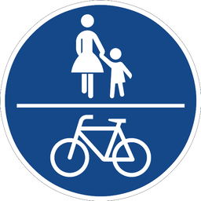
Shared cycle and footpath DE:240
English Shared cycle and footpath Français Voie partagée pour cycles et piétons Deutsch Gemeinsamer Geh- und Radweg Nederlands Gedeeld fiets- en voetpad Image source and licence erstes Hochladen einer Datei durch Andreas 06; nach den Vorgaben 2017 korrekt interpretiert und digital umgesetzt durch Mediatus · File:Zeichen 240 - Gemeinsamer Fuß- und Radweg, StVO 1992.svg · Public domain
Unmodified original SVG; Original SVG rasterized locally to fit 256 × 256 pixels, aspect ratio preserved, metadata stripped.
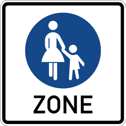
Start of pedestrian zone DE:242.1
English Not announced Français Not announced Deutsch Not announced Nederlands Not announced Image source and licence Nach den amtlichen Vorgaben digital umgesetzt durch: Mediatus · File:Zeichen 242.1 - Beginn einer Fußgängerzone, StVO 2009.svg · Public domain
Unmodified original SVG; Original SVG rasterized locally to fit 256 × 256 pixels, aspect ratio preserved, metadata stripped.
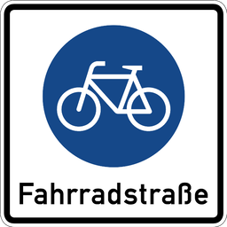
Cycle street DE:244.1
English Cycle street Français Rue cyclable Deutsch Fahrradstraße Nederlands Fietsstraat Image source and licence Nach den amtlichen Vorgaben digital umgesetzt durch: Mediatus · File:Zeichen 244.1 - Beginn einer Fahrradstraße, StVO 2013.svg · Public domain
Unmodified original SVG; Original SVG rasterized locally to fit 256 × 256 pixels, aspect ratio preserved, metadata stripped.
Bus lane DE:245
English Bus lane Français Voie réservée aux bus Deutsch Bussonderfahrstreifen Nederlands Busstrook Image source and licence Nach den amtlichen Vorgaben digital umgesetzt durch: Mediatus · File:Zeichen 245 - Bussonderfahrstreifen, StVO 2013.svg · Public domain
Unmodified original SVG; Original SVG rasterized locally to fit 256 × 256 pixels, aspect ratio preserved, metadata stripped.
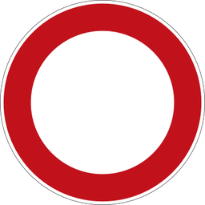
No vehicles DE:250
English No vehicles Français Accès interdit à tous véhicules Deutsch Verbot für Fahrzeuge aller Art Nederlands Verboden voor alle voertuigen Image source and licence nach den Vorgaben digital umgesetzt durch Mediatus · File:Zeichen 250 - Verbot für Fahrzeuge aller Art, StVO 1970.svg · Public domain
Unmodified original SVG; Commons PNG rendition resized to fit 256 × 256 pixels with aspect ratio preserved and metadata stripped. Commons renderer used because ImageMagick SVG renderer loses sign lettering or ring.
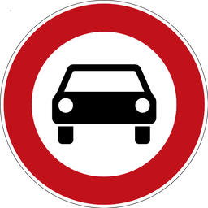
No multi-track motor vehicles DE:251
English No motor vehicles with more than two wheels Français Accès interdit aux véhicules à moteur de plus de deux roues Deutsch Verbot für mehrspurige Kraftfahrzeuge Nederlands Verboden voor motorvoertuigen op meer dan twee wielen Image source and licence MarianSigler {bla}, Mediatus · File:Zeichen 251 - Verbot für Kraftwagen und sonstige mehrspurige Kraftfahrzeuge, StVO 1992.svg · Public domain
Unmodified original SVG; Original SVG rasterized locally to fit 256 × 256 pixels, aspect ratio preserved, metadata stripped.
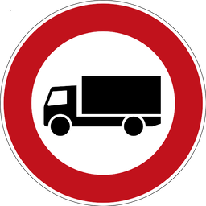
No heavy vehicles over 3.5 t DE:253
English No heavy vehicles over three and a half tonnes Français Interdit aux véhicules lourds de plus de trois tonnes et demie Deutsch Verbot für schwere Kraftfahrzeuge über dreieinhalb Tonnen Nederlands Verboden voor zware voertuigen boven drie en een halve ton Image source and licence MarianSigler {bla} · File:Zeichen 253 - Verbot für Kraftfahrzeuge mit einem zulässigen Gesamtgewicht, StVO 1992.svg · Public domain
Unmodified original SVG; Original SVG rasterized locally to fit 256 × 256 pixels, aspect ratio preserved, metadata stripped.
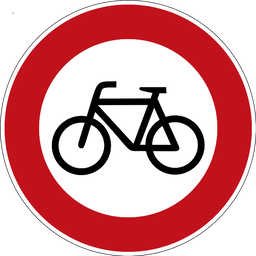
No cycling DE:254
English No cycling Français Accès interdit aux cycles Deutsch Verbot für Radverkehr Nederlands Verboden voor fietsers Image source and licence MarianSigler {bla}, Mediatus Image taken from the de:Straßenverkehrs-Ordnung (German Road Regulations) as published by the de:Bundesministerium für Verkehr, Bau- und Wohnungswesen (German Federal Ministry of Traffic, Building and Housing) at [1]. · File:Zeichen 254 - Verbot für Radfahrer, StVO 1992.svg · Public domain
Unmodified original SVG; Original SVG rasterized locally to fit 256 × 256 pixels, aspect ratio preserved, metadata stripped.
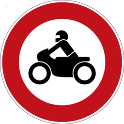
No motorcycles DE:255
English No motorcycles Français Accès interdit aux motos Deutsch Verbot für Krafträder Nederlands Verboden voor motorfietsen Image source and licence Bundesministerium für Verkehr, Bau- und Wohnungswesen · File:Zeichen 255 - Verbot für Krafträder, auch mit Beiwagen, Kleinkrafträder und Mofas, StVO 1992.svg · Public domain
Unmodified original SVG; Original SVG rasterized locally to fit 256 × 256 pixels, aspect ratio preserved, metadata stripped.
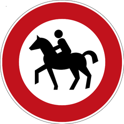
No horse riders DE:257-51
English No horse riders Français Accès interdit aux cavaliers Deutsch Verbot für Reiter Nederlands Verboden voor ruiters Image source and licence Nach den amtlichen Vorgaben digital umgesetzt durch: Mediatus · File:Zeichen 257-51 - Verbot für Reiter, StVO 2017.svg · Public domain
Unmodified original SVG; Original SVG rasterized locally to fit 256 × 256 pixels, aspect ratio preserved, metadata stripped.
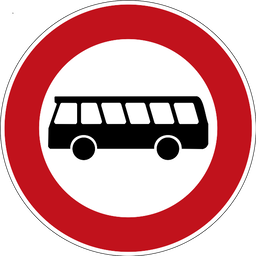
No buses DE:257-54
English No buses Français Accès interdit aux autobus Deutsch Verbot für Kraftomnibusse Nederlands Verboden voor autobussen Image source and licence Nach den amtlichen Vorgaben digital umgesetzt durch: Mediatus · File:Zeichen 257-54 - Verbot für Kraftomnibusse, StVO 2017.svg · Public domain
Unmodified original SVG; Original SVG rasterized locally to fit 256 × 256 pixels, aspect ratio preserved, metadata stripped.
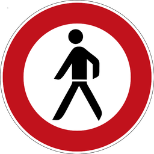
No pedestrians DE:259
English No pedestrians Français Accès interdit aux piétons Deutsch Verbot für Fußgänger Nederlands Verboden voor voetgangers Image source and licence MarianSigler {bla} & Mediatus · File:Zeichen 259 - Verbot für Fußgänger, StVO 1992.svg · Public domain
Unmodified original SVG; Original SVG rasterized locally to fit 256 × 256 pixels, aspect ratio preserved, metadata stripped.
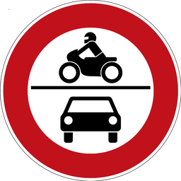
No motor vehicles DE:260
English No motor vehicles Français Accès interdit aux véhicules à moteur Deutsch Verbot für Kraftfahrzeuge Nederlands Verboden voor motorvoertuigen Image source and licence vectorized by · File:Zeichen 260 - Verbot für Krafträder und Mofas und sonstige mehrspurige Kraftfahrzeuge, StVO 1992.svg · Public domain
Unmodified original SVG; Original SVG rasterized locally to fit 256 × 256 pixels, aspect ratio preserved, metadata stripped.
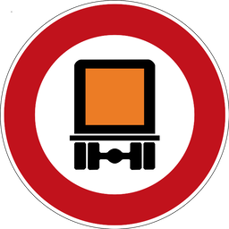
No marked dangerous-goods vehicles DE:261
English No dangerous-goods vehicles Français Accès interdit aux transports de marchandises dangereuses Deutsch Verbot für Gefahrguttransporte Nederlands Verboden voor vervoer van gevaarlijke stoffen Image source and licence vectorized by · File:Zeichen 261 - Verbot für kennzeichnungspflichtige Kraftfahrzeuge mit gefährlichen Gütern, StVO 1988.svg · Public domain
Unmodified original SVG; Original SVG rasterized locally to fit 256 × 256 pixels, aspect ratio preserved, metadata stripped.
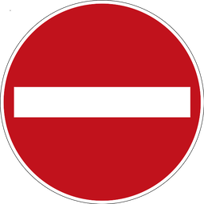
No entry DE:267
English No entry Français Sens interdit Deutsch Verbot der Einfahrt Nederlands Verboden in te rijden Image source and licence Hochladen der ursprünglichen Version: MarianSigler; nach den historischen Vorgaben digital neu umgesetzt durch: Mediatus · File:Zeichen 267 - Verbot der Einfahrt, StVO 1970.svg · Public domain
Unmodified original SVG; Original SVG rasterized locally to fit 256 × 256 pixels, aspect ratio preserved, metadata stripped.
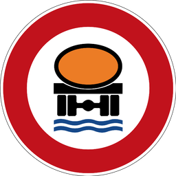
No water-polluting loads DE:269
English No water-polluting loads Français Accès interdit aux chargements polluant l’eau Deutsch Verbot für wassergefährdende Ladung Nederlands Verboden voor waterverontreinigende lading Image source and licence Andreas06 · File:Zeichen 269 - Verbot für Fahrzeuge mit wassergefährdender Ladung, StVO 1988.svg · Public domain
Unmodified original SVG; Original SVG rasterized locally to fit 256 × 256 pixels, aspect ratio preserved, metadata stripped.
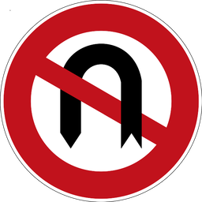
No U-turn DE:272
English No U-turn Français Demi-tour interdit Deutsch Wenden verboten Nederlands Verboden te keren Image source and licence Andreas 06 (ursprüngliche Datei); komplett neu erstellt durch Mediatus · File:Zeichen 272, Verbot des Wendens, StVO 1992.svg · Public domain
Unmodified original SVG; Original SVG rasterized locally to fit 256 × 256 pixels, aspect ratio preserved, metadata stripped.
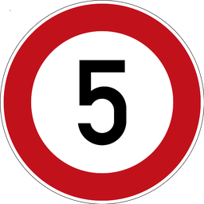
Maximum speed 5 km/h DE:274-5
English Not announced Français Not announced Deutsch Not announced Nederlands Not announced Image source and licence Nach den amtlichen Vorgaben digital umgesetzt durch: Mediatus · File:Zeichen 274-5 - Zulässige Höchstgeschwindigkeit, StVO 2017.svg · Public domain
Unmodified original SVG; Original SVG rasterized locally to fit 256 × 256 pixels, aspect ratio preserved, metadata stripped.
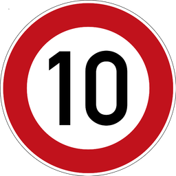
Maximum speed 10 km/h DE:274-10
English Not announced Français Not announced Deutsch Not announced Nederlands Not announced Image source and licence Nach den amtlichen Vorgaben digital umgesetzt durch: Mediatus · File:Zeichen 274-10 - Zulässige Höchstgeschwindigkeit, StVO 2017.svg · Public domain
Unmodified original SVG; Original SVG rasterized locally to fit 256 × 256 pixels, aspect ratio preserved, metadata stripped.
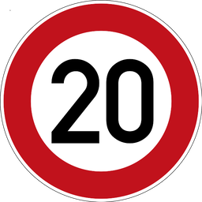
Maximum speed 20 km/h DE:274-20
English Not announced Français Not announced Deutsch Not announced Nederlands Not announced Image source and licence Nach den amtlichen Vorgaben digital umgesetzt durch: Mediatus · File:Zeichen 274-20 - Zulässige Höchstgeschwindigkeit, StVO 2017.svg · Public domain
Unmodified original SVG; Original SVG rasterized locally to fit 256 × 256 pixels, aspect ratio preserved, metadata stripped.
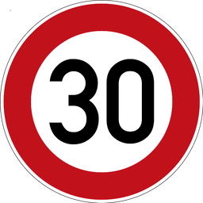
Maximum speed 30 km/h DE:274-30
English Not announced Français Not announced Deutsch Not announced Nederlands Not announced Image source and licence Nach den amtlichen Vorgaben digital umgesetzt durch: Mediatus · File:Zeichen 274-30 - Zulässige Höchstgeschwindigkeit, StVO 2017.svg · Public domain
Unmodified original SVG; Original SVG rasterized locally to fit 256 × 256 pixels, aspect ratio preserved, metadata stripped.
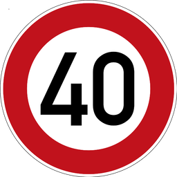
Maximum speed 40 km/h DE:274-40
English Not announced Français Not announced Deutsch Not announced Nederlands Not announced Image source and licence Nach den amtlichen Vorgaben digital umgesetzt durch: Mediatus · File:Zeichen 274-40 - Zulässige Höchstgeschwindigkeit, StVO 2017.svg · Public domain
Unmodified original SVG; Original SVG rasterized locally to fit 256 × 256 pixels, aspect ratio preserved, metadata stripped.
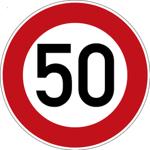
Maximum speed 50 km/h DE:274-50
English Not announced Français Not announced Deutsch Not announced Nederlands Not announced Image source and licence Nach den amtlichen Vorgaben digital umgesetzt durch: Mediatus · File:Zeichen 274-50 - Zulässige Höchstgeschwindigkeit, StVO 2017.svg · Public domain
Unmodified original SVG; Original SVG rasterized locally to fit 256 × 256 pixels, aspect ratio preserved, metadata stripped.
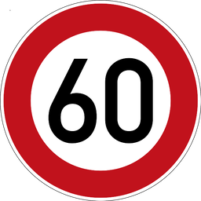
Maximum speed 60 km/h DE:274-60
English Not announced Français Not announced Deutsch Not announced Nederlands Not announced Image source and licence Nach den amtlichen Vorgaben digital umgesetzt durch: Mediatus · File:Zeichen 274-60 - Zulässige Höchstgeschwindigkeit, StVO 2017.svg · Public domain
Unmodified original SVG; Original SVG rasterized locally to fit 256 × 256 pixels, aspect ratio preserved, metadata stripped.
Maximum speed 70 km/h DE:274-70
English Not announced Français Not announced Deutsch Not announced Nederlands Not announced Image source and licence vectorized by · File:Zeichen 274-70 - Zulässige Höchstgeschwindigkeit, StVO 2017.svg · Public domain
Unmodified original SVG; Original SVG rasterized locally to fit 256 × 256 pixels, aspect ratio preserved, metadata stripped.
Maximum speed 80 km/h DE:274-80
English Not announced Français Not announced Deutsch Not announced Nederlands Not announced Image source and licence Nach den amtlichen Vorgaben digital umgesetzt durch: Mediatus · File:Zeichen 274-80 - Zulässige Höchstgeschwindigkeit, StVO 2017.svg · Public domain
Unmodified original SVG; Original SVG rasterized locally to fit 256 × 256 pixels, aspect ratio preserved, metadata stripped.
Maximum speed 100 km/h DE:274-100
English Not announced Français Not announced Deutsch Not announced Nederlands Not announced Image source and licence Nach den amtlichen Vorgaben digital umgesetzt durch: Mediatus · File:Zeichen 274-100 - Zulässige Höchstgeschwindigkeit, StVO 2017.svg · Public domain
Unmodified original SVG; Original SVG rasterized locally to fit 256 × 256 pixels, aspect ratio preserved, metadata stripped.
Maximum speed 120 km/h DE:274-120
English Not announced Français Not announced Deutsch Not announced Nederlands Not announced Image source and licence Nach den amtlichen Vorgaben digital umgesetzt durch: Mediatus · File:Zeichen 274-120 - Zulässige Höchstgeschwindigkeit, StVO 2017.svg · Public domain
Unmodified original SVG; Original SVG rasterized locally to fit 256 × 256 pixels, aspect ratio preserved, metadata stripped.
Maximum speed 130 km/h DE:274-130
English Not announced Français Not announced Deutsch Not announced Nederlands Not announced Image source and licence Nach den amtlichen Vorgaben digital umgesetzt durch: Mediatus · File:Zeichen 274-130 - Zulässige Höchstgeschwindigkeit, StVO 2017.svg · Public domain
Unmodified original SVG; Original SVG rasterized locally to fit 256 × 256 pixels, aspect ratio preserved, metadata stripped.
Start of 30 km/h zone DE:274.1
English Not announced Français Not announced Deutsch Not announced Nederlands Not announced Image source and licence erstes Hochladen einer Datei durch D0ktorz; nach den Vorgaben 2017 korrekt interpretiert und digital umgesetzt durch Mediatus · File:Zeichen 274.1 - Beginn einer Tempo 30-Zone, StVO 2013.svg · Public domain
Unmodified original SVG; Original SVG rasterized locally to fit 256 × 256 pixels, aspect ratio preserved, metadata stripped.
Start of 20 km/h zone DE:274.1-20
English Not announced Français Not announced Deutsch Not announced Nederlands Not announced Image source and licence nach den Vorgaben 2017 korrekt interpretiert und digital umgesetzt durch Mediatus · File:Zeichen 274.1-20 - Beginn einer Tempo 20-Zone in verkehrsberuhigten Geschäftsbereichen (einseitig), StVO 2013.svg · Public domain
Unmodified original SVG; Original SVG rasterized locally to fit 256 × 256 pixels, aspect ratio preserved, metadata stripped.
End of 30 km/h zone DE:274.2
English Not announced Français Not announced Deutsch Not announced Nederlands Not announced Image source and licence nach den Vorgaben korrekt interpretiert und digital umgesetzt durch Mediatus · File:Zeichen 274.2 - Ende einer Tempo 30-Zone (einseitig), StVO 2013.svg · Public domain
Unmodified original SVG; Original SVG rasterized locally to fit 256 × 256 pixels, aspect ratio preserved, metadata stripped.
No overtaking DE:276
English No overtaking Français Interdiction de dépasser Deutsch Überholverbot Nederlands Inhaalverbod Image source and licence erstes Hochladen einer Datei durch Andreas 06; nach den historischen Vorgaben 2017 korrekt interpretiert und digital umgesetzt durch Mediatus · File:Zeichen 276 - Überholverbot für Kraftfahrzeuge aller Art, StVO 1992.svg · Public domain
Unmodified original SVG; Original SVG rasterized locally to fit 256 × 256 pixels, aspect ratio preserved, metadata stripped.
No overtaking by heavy vehicles over 3.5 t DE:277
English No overtaking by heavy vehicles Français Dépassement interdit aux véhicules lourds Deutsch Überholverbot für schwere Kraftfahrzeuge Nederlands Inhaalverbod voor zware voertuigen Image source and licence erstes Hochladen einer Datei durch Andreas 06; nach den Vorgaben 2017 korrekt interpretiert und digital umgesetzt durch Mediatus · File:Zeichen 277 - Überholverbot für Kraftfahrzeuge mit einem zulässigen Gesamtgewicht über 2,8 t, einschließlich ihrer Anhänger, StVO 1992.svg · Public domain
Unmodified original SVG; Original SVG rasterized locally to fit 256 × 256 pixels, aspect ratio preserved, metadata stripped.
End of 5 km/h speed restriction DE:278-5
English Not announced Français Not announced Deutsch Not announced Nederlands Not announced Image source and licence Nach den amtlichen Vorgaben digital umgesetzt durch: Mediatus · File:Zeichen 278-5 - Ende der zulässigen Höchstgeschwindigkeit, StVO 2017.svg · Public domain
Unmodified original SVG; Original SVG rasterized locally to fit 256 × 256 pixels, aspect ratio preserved, metadata stripped.
End of 10 km/h speed restriction DE:278-10
English Not announced Français Not announced Deutsch Not announced Nederlands Not announced Image source and licence Nach den amtlichen Vorgaben digital umgesetzt durch: Mediatus · File:Zeichen 278-10 - Ende der zulässigen Höchstgeschwindigkeit, StVO 2017.svg · Public domain
Unmodified original SVG; Original SVG rasterized locally to fit 256 × 256 pixels, aspect ratio preserved, metadata stripped.
End of 20 km/h speed restriction DE:278-20
English Not announced Français Not announced Deutsch Not announced Nederlands Not announced Image source and licence Nach den amtlichen Vorgaben digital umgesetzt durch: Mediatus · File:Zeichen 278-20 - Ende der zulässigen Höchstgeschwindigkeit, StVO 2017.svg · Public domain
Unmodified original SVG; Original SVG rasterized locally to fit 256 × 256 pixels, aspect ratio preserved, metadata stripped.
End of 30 km/h speed restriction DE:278-30
English Not announced Français Not announced Deutsch Not announced Nederlands Not announced Image source and licence Nach den amtlichen Vorgaben digital umgesetzt durch: Mediatus · File:Zeichen 278-30 - Ende der zulässigen Höchstgeschwindigkeit, StVO 2017.svg · Public domain
Unmodified original SVG; Original SVG rasterized locally to fit 256 × 256 pixels, aspect ratio preserved, metadata stripped.
End of 40 km/h speed restriction DE:278-40
English Not announced Français Not announced Deutsch Not announced Nederlands Not announced Image source and licence Nach den amtlichen Vorgaben digital umgesetzt durch: Mediatus · File:Zeichen 278-40 - Ende der zulässigen Höchstgeschwindigkeit, StVO 2017.svg · Public domain
Unmodified original SVG; Original SVG rasterized locally to fit 256 × 256 pixels, aspect ratio preserved, metadata stripped.
End of 50 km/h speed restriction DE:278-50
English Not announced Français Not announced Deutsch Not announced Nederlands Not announced Image source and licence Nach den amtlichen Vorgaben digital umgesetzt durch: Mediatus · File:Zeichen 278-50 - Ende der zulässigen Höchstgeschwindigkeit, StVO 2017.svg · Public domain
Unmodified original SVG; Original SVG rasterized locally to fit 256 × 256 pixels, aspect ratio preserved, metadata stripped.
End of 60 km/h speed restriction DE:278-60
English Not announced Français Not announced Deutsch Not announced Nederlands Not announced Image source and licence Nach den amtlichen Vorgaben digital umgesetzt durch: Mediatus · File:Zeichen 278-60 - Ende der zulässigen Höchstgeschwindigkeit, StVO 2017.svg · Public domain
Unmodified original SVG; Original SVG rasterized locally to fit 256 × 256 pixels, aspect ratio preserved, metadata stripped.
End of 70 km/h speed restriction DE:278-70
English Not announced Français Not announced Deutsch Not announced Nederlands Not announced Image source and licence Nach den amtlichen Vorgaben digital umgesetzt durch: Mediatus · File:Zeichen 278-70 - Ende der zulässigen Höchstgeschwindigkeit, StVO 2017.svg · Public domain
Unmodified original SVG; Original SVG rasterized locally to fit 256 × 256 pixels, aspect ratio preserved, metadata stripped.
End of 80 km/h speed restriction DE:278-80
English Not announced Français Not announced Deutsch Not announced Nederlands Not announced Image source and licence Nach den amtlichen Vorgaben digital umgesetzt durch: Mediatus · File:Zeichen 278-80 - Ende der zulässigen Höchstgeschwindigkeit, StVO 2017.svg · Public domain
Unmodified original SVG; Original SVG rasterized locally to fit 256 × 256 pixels, aspect ratio preserved, metadata stripped.
End of 90 km/h speed restriction DE:278-90
English Not announced Français Not announced Deutsch Not announced Nederlands Not announced Image source and licence Nach den amtlichen Vorgaben digital umgesetzt durch: Mediatus · File:Zeichen 278-90 - Ende der zulässigen Höchstgeschwindigkeit, StVO 2017.svg · Public domain
Unmodified original SVG; Original SVG rasterized locally to fit 256 × 256 pixels, aspect ratio preserved, metadata stripped.
End of 100 km/h speed restriction DE:278-100
English Not announced Français Not announced Deutsch Not announced Nederlands Not announced Image source and licence Nach den amtlichen Vorgaben digital umgesetzt durch: Mediatus · File:Zeichen 278-100 - Ende der zulässigen Höchstgeschwindigkeit, StVO 2017.svg · Public domain
Unmodified original SVG; Original SVG rasterized locally to fit 256 × 256 pixels, aspect ratio preserved, metadata stripped.
End of 110 km/h speed restriction DE:278-110
English Not announced Français Not announced Deutsch Not announced Nederlands Not announced Image source and licence Nach den amtlichen Vorgaben digital umgesetzt durch: Mediatus · File:Zeichen 278-110 - Ende der zulässigen Höchstgeschwindigkeit, StVO 2017.svg · Public domain
Unmodified original SVG; Original SVG rasterized locally to fit 256 × 256 pixels, aspect ratio preserved, metadata stripped.
End of 120 km/h speed restriction DE:278-120
English Not announced Français Not announced Deutsch Not announced Nederlands Not announced Image source and licence Nach den amtlichen Vorgaben digital umgesetzt durch: Mediatus · File:Zeichen 278-120 - Ende der zulässigen Höchstgeschwindigkeit, StVO 2017.svg · Public domain
Unmodified original SVG; Original SVG rasterized locally to fit 256 × 256 pixels, aspect ratio preserved, metadata stripped.
End of 130 km/h speed restriction DE:278-130
English Not announced Français Not announced Deutsch Not announced Nederlands Not announced Image source and licence Nach den amtlichen Vorgaben digital umgesetzt durch: Mediatus · File:Zeichen 278-130 - Ende der zulässigen Höchstgeschwindigkeit, StVO 2017.svg · Public domain
Unmodified original SVG; Original SVG rasterized locally to fit 256 × 256 pixels, aspect ratio preserved, metadata stripped.
End of overtaking ban DE:280
English End of overtaking ban Français Fin d’interdiction de dépasser Deutsch Ende des Überholverbots Nederlands Einde inhaalverbod Image source and licence Ursprungsdatei: Andreas 06; nach den amtlichen Vorgaben interpretiert und digital korrekt umgesetzt von Mediatus · File:Zeichen 280 - Ende des Überholverbotes für Kraftfahrzeuge aller Art, StVO 1992.svg · Public domain
Unmodified original SVG; Original SVG rasterized locally to fit 256 × 256 pixels, aspect ratio preserved, metadata stripped.
End of overtaking ban for heavy vehicles over 3.5 t DE:281
English Not announced Français Not announced Deutsch Not announced Nederlands Not announced Image source and licence Ursprungsdatei: Andreas 06; nach den amtlichen Vorgaben von 1972 und 1992 im Jahr 2017 interpretiert und digital korrekt umgesetzt von Mediatus · File:Zeichen 281 - Ende des Überholverbots für Kraftfahrzeuge mit einem zulässigen Gesamtgewicht über 3,5 t, StVO 1992.svg · Public domain
Unmodified original SVG; Original SVG rasterized locally to fit 256 × 256 pixels, aspect ratio preserved, metadata stripped.
End of route restrictions DE:282
English Not announced Français Not announced Deutsch Not announced Nederlands Not announced Image source and licence D0ktorz (ursprüngliche Datei); nach Vorgaben interpretiert und digital neu gezeichnet 2017 durch Mediatus · File:Zeichen 282 - Ende sämtlicher Streckenverbote, StVO 1970.svg · Public domain
Unmodified original SVG; Original SVG rasterized locally to fit 256 × 256 pixels, aspect ratio preserved, metadata stripped.
No stopping DE:283
English No stopping Français Arrêt et stationnement interdits Deutsch Absolutes Haltverbot Nederlands Stilstaan en parkeren verboden Image source and licence Nach den amtlichen Vorgaben digital umgesetzt durch: Mediatus · File:Zeichen 283 - Absolutes Haltverbot, StVO 2017.svg · Public domain
Unmodified original SVG; Original SVG rasterized locally to fit 256 × 256 pixels, aspect ratio preserved, metadata stripped.
No parking DE:286
English No parking Français Stationnement interdit Deutsch Eingeschränktes Haltverbot Nederlands Parkeerverbod Image source and licence MarianSigler and Mediatus · File:Zeichen 286 - Eingeschränktes Halteverbot, StVO 1970.svg · Public domain
Unmodified original SVG; Original SVG rasterized locally to fit 256 × 256 pixels, aspect ratio preserved, metadata stripped.
Start of no-parking zone DE:290.1
English Start of no-parking zone Français Début de zone de stationnement interdit Deutsch Beginn einer Haltverbotszone Nederlands Begin parkeerverbodszone Image source and licence Bundesministerium für Verkehr, Bau- und Wohnungswesen · File:Zeichen 290.1 - Beginn eines eingeschränkten Haltverbotes für eine Zone, StVO 2009.svg · Public domain
Unmodified original SVG; Original SVG rasterized locally to fit 256 × 256 pixels, aspect ratio preserved, metadata stripped.
Priority at next junction DE:301
English Caution, Priority at next junction Français Attention, Priorité à la prochaine intersection Deutsch Achtung, Vorfahrt an der nächsten Kreuzung Nederlands Let op, Voorrang op het volgende kruispunt Image source and licence erstes Hochladen einer Datei durch Andreas 06; nach den historischen Vorgaben korrekt interpretiert und digital umgesetzt durch Mediatus · File:Zeichen 301 - Vorfahrt, StVO 1970.svg · Public domain
Unmodified original SVG; Original SVG rasterized locally to fit 256 × 256 pixels, aspect ratio preserved, metadata stripped.
Priority road DE:306
English Priority road Français Route prioritaire Deutsch Vorfahrtstraße Nederlands Voorrangsweg Image source and licence 2006: ursprüngliche Datei: Andreas 06; 2017: komplett neue und authentisch gestaltete Datei: nach den historischen Vorgaben digital umgesetzt durch Mediatus · File:Zeichen 306 - Vorfahrtstraße, StVO 1970.svg · Public domain
Unmodified original SVG; Original SVG rasterized locally to fit 256 × 256 pixels, aspect ratio preserved, metadata stripped.
End of priority road DE:307
English End of priority road Français Fin de route prioritaire Deutsch Ende der Vorfahrtstraße Nederlands Einde voorrangsweg Image source and licence 2006: ursprüngliche Datei: Andreas 06; 2017: komplett neue und authentisch gestaltete Datei: nach den historischen Vorgaben digital umgesetzt durch Mediatus · File:Zeichen 307 - Ende der Vorfahrtstraße, StVO 1981.svg · Public domain
Unmodified original SVG; Original SVG rasterized locally to fit 256 × 256 pixels, aspect ratio preserved, metadata stripped.
Priority over oncoming traffic DE:308
English Priority over oncoming traffic Français Priorité sur la circulation en sens inverse Deutsch Vorrang vor Gegenverkehr Nederlands Voorrang op tegenliggers Image source and licence Hochladen einer ersten Datei: Andreas06; 2017 nach den offiziellen Vorgaben komplett neu umgezeichnet durch Mediatus · File:Zeichen 308 - Vorrang vor dem Gegenverkehr, StVO 1992.svg · Public domain
Unmodified original SVG; Original SVG rasterized locally to fit 256 × 256 pixels, aspect ratio preserved, metadata stripped.
Start of built-up area DE:310
English Not announced Français Not announced Deutsch Not announced Nederlands Not announced Image source and licence Nach den amtlichen Vorgaben digital umgesetzt durch: Mediatus · File:Zeichen 310 - Ortstafel Vorderseite, StVO 2017.svg · Public domain
Unmodified original SVG; Original SVG rasterized locally to fit 256 × 256 pixels, aspect ratio preserved, metadata stripped.
End of built-up area DE:311
English Not announced Français Not announced Deutsch Not announced Nederlands Not announced Image source and licence Nach den amtlichen Vorgaben digital umgesetzt durch: Mediatus · File:Zeichen 311 - Ortstafel Rückseite, StVO 2017.svg · Public domain
Unmodified original SVG; Original SVG rasterized locally to fit 256 × 256 pixels, aspect ratio preserved, metadata stripped.
Parking area DE:314
English Parking area Français Parking Deutsch Parkplatz Nederlands Parkeerplaats Image source and licence Nach den amtlichen Vorgaben digital umgesetzt durch: Mediatus · File:Zeichen 314 - Parken, StVO 2017.svg · Public domain
Unmodified original SVG; Original SVG rasterized locally to fit 256 × 256 pixels, aspect ratio preserved, metadata stripped.
Covered parking DE:314-50
English Covered parking Français Parking couvert Deutsch Parkhaus oder Tiefgarage Nederlands Parkeergarage Image source and licence Nach den amtlichen Vorgaben digital umgesetzt durch: Mediatus · File:Zeichen 314-50 - Parkhaus, Parkgarage, StVO 2017.svg · Public domain
Unmodified original SVG; Original SVG rasterized locally to fit 256 × 256 pixels, aspect ratio preserved, metadata stripped.
Park and ride DE:316
English Park and ride Français Parc relais Deutsch Parken und Reisen Nederlands Parkeren en reizen Image source and licence Nach den amtlichen Vorgaben digital umgesetzt durch: Mediatus · File:Zeichen 316 - Parken und Reisen, StVO 1992.svg · Public domain
Unmodified original SVG; Original SVG rasterized locally to fit 256 × 256 pixels, aspect ratio preserved, metadata stripped.
Hikers’ parking DE:317
English Hikers’ parking Français Parking de randonnée Deutsch Wanderparkplatz Nederlands Wandelparkeerplaats Image source and licence vectorized by · File:Zeichen 317 - Wandererparkplatz, StVO 1992.svg · Public domain
Unmodified original SVG; Original SVG rasterized locally to fit 256 × 256 pixels, aspect ratio preserved, metadata stripped.
Tunnel DE:327
English Tunnel Français Tunnel Deutsch Tunnel Nederlands Tunnel Image source and licence Nach den amtlichen Vorgaben digital umgesetzt durch: Mediatus · File:Zeichen 327 - Tunnel, StVO 2017.svg · Public domain
Unmodified original SVG; Original SVG rasterized locally to fit 256 × 256 pixels, aspect ratio preserved, metadata stripped.
Motorway DE:330.1
English Not announced Français Not announced Deutsch Not announced Nederlands Not announced Image source and licence vectorized by · File:Zeichen 330.1 - Autobahn, StVO 2013.svg · Public domain
Unmodified original SVG; Original SVG rasterized locally to fit 256 × 256 pixels, aspect ratio preserved, metadata stripped.
End of motorway DE:330.2
English Not announced Français Not announced Deutsch Not announced Nederlands Not announced Image source and licence vectorized by · File:Zeichen 330.2 - Ende der Autobahn, StVO 2013.svg · Public domain
Unmodified original SVG; Original SVG rasterized locally to fit 256 × 256 pixels, aspect ratio preserved, metadata stripped.
Motor road DE:331.1
English Not announced Français Not announced Deutsch Not announced Nederlands Not announced Image source and licence vectorized by · File:Zeichen 331.1 - Kraftfahrstraße, StVO 2013.svg · Public domain
Unmodified original SVG; Original SVG rasterized locally to fit 256 × 256 pixels, aspect ratio preserved, metadata stripped.
End of motor road DE:331.2
English Not announced Français Not announced Deutsch Not announced Nederlands Not announced Image source and licence vectorized by · File:Zeichen 331.2 - Ende der Kraftfahrstraße, StVO 2013.svg · Public domain
Unmodified original SVG; Original SVG rasterized locally to fit 256 × 256 pixels, aspect ratio preserved, metadata stripped.
Pedestrian crossing DE:350
English Pedestrian crossing Français Passage piéton Deutsch Fußgängerüberweg Nederlands Voetgangersoversteekplaats Image source and licence Interpreted and digitally redrawn by Mediatus · File:Zeichen 350 - Fußgängerüberweg, StVO 1970.svg · Public domain
Unmodified original SVG; Original SVG rasterized locally to fit 256 × 256 pixels, aspect ratio preserved, metadata stripped.
No through road DE:357
English No through road Français Impasse Deutsch Sackgasse Nederlands Doodlopende weg Image source and licence vectorized by · File:Zeichen 357 - Sackgasse, StVO 1992.svg · Public domain
Unmodified original SVG; Original SVG rasterized locally to fit 256 × 256 pixels, aspect ratio preserved, metadata stripped.
Accessible parking DE:1044-10
English Accessible parking Français Stationnement réservé aux personnes handicapées Deutsch Behindertenparkplatz Nederlands Gehandicaptenparkeerplaats Image source and licence Nach den amtlichen Vorgaben von 1992 digital umgesetzt durch: Mediatus · File:Zusatzzeichen 1044-10 - nur Schwerbehinderte mit außergewöhnlicher Gehbehinderung und Blinde, StVO 1992.svg · Public domain
Unmodified original SVG; Original SVG rasterized locally to fit 256 × 256 pixels, aspect ratio preserved, metadata stripped.
Traffic-sign catalogue Speeding fine tables